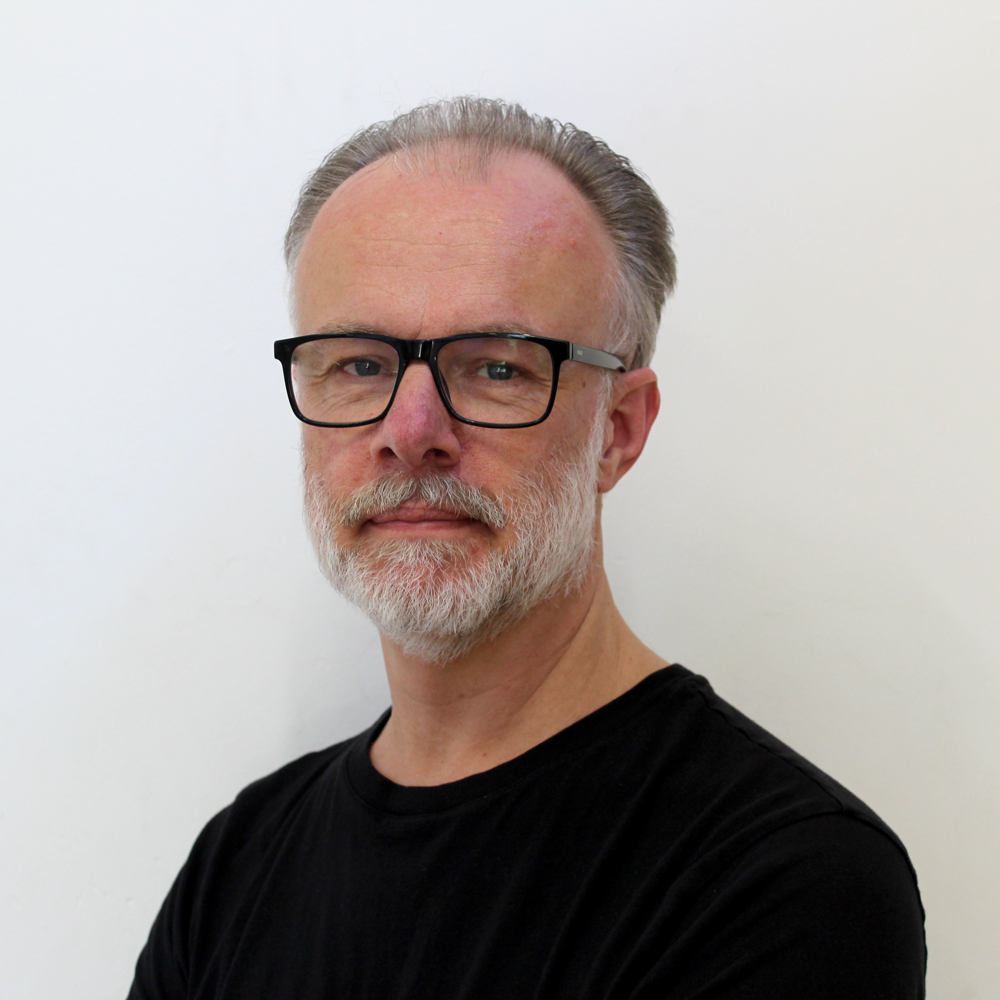
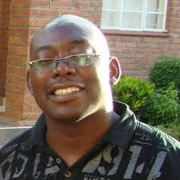
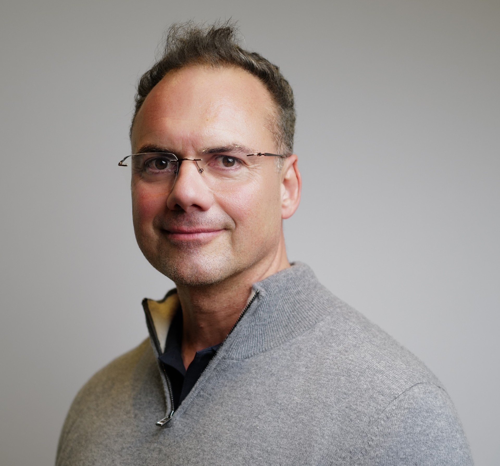
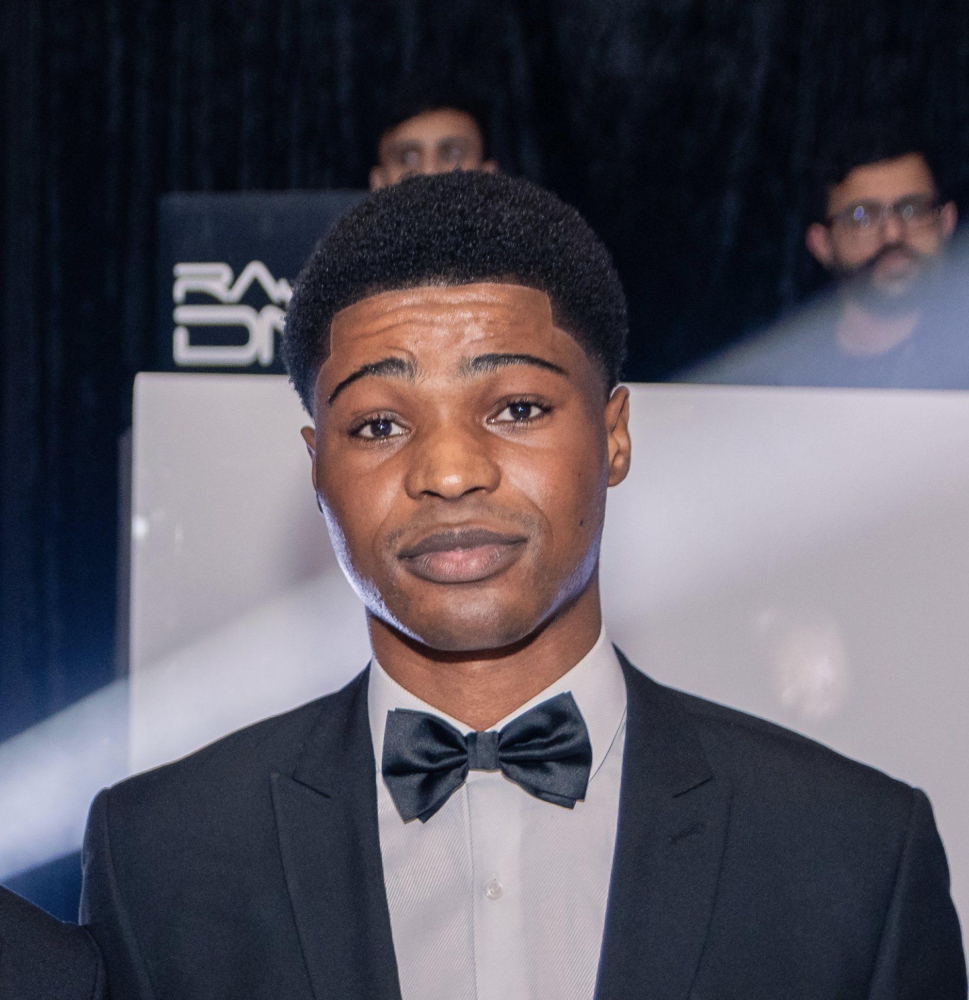

Tim Beck
Project Lead
Tim is the TRExt project Principal Investigator. His work spans the development of NLP pipelines for biomedical text, applying FAIR data principles to health research infrastructure, and contributing to technologies that enable standardised discovery and analysis of health data. His research group is funded by Horizon Europe, CHIST-ERA, UKRI, ELIXIR and BioFAIR.
Grazziela Figueredo
Project Co-Lead · Machine Learning
Grazziela leads machine learning and data modelling for TRExt, and is the developer of Lettuce — the LLM-assisted OMOP concept mapping tool central to WP2. She is Associate Director of HDR UK Midlands and Training Lead for the HDR UK Federated Analytics programme, with over £16.5M in secured research funding from UKRI, NIHR, and Innovate UK.

Phil Quinlan
Project Co-Lead · TREvolution
Phil leads TRExt's alignment with the DARE UK TREvolution programme. He is co-lead for HDR UK's £3M Federated Analytics programme and Health Informatics Theme Lead for the NIHR Nottingham Biomedical Research Centre. Phil currently leads and collaborates on grants exceeding £16M.

Angus Roberts
Project Co-Lead · Text Analytics
Angus provides expertise in health record text analytics and machine learning to the project. He is also part of the MRC DATAMIND project, which is providing one of the TRExt use-cases.

Robert Stewart
Project Co-Lead · Clinical Lead
Robert is Academic Lead for the NIHR Maudsley Biomedical Research Centre's Clinical Record Interactive Search (CRIS) resource, overseeing its NLP enhancements and research uptake across more than 400 publications. He brings deep clinical and operational knowledge of mental health text data, ensuring TRExt's NLP tools meet clinical validation standards.

Claire Newman
Project Co-Lead · PIE Lead
Claire leads all Public Involvement and Engagement for TRExt and manages Swansea University's SAIL Consumer Panel. She has pioneered hybrid workshops and multimedia consultation methods that have been adopted as best practice across DARE UK and HDR UK. Claire ensures public perspectives directly shape TRExt's technical design decisions at every stage.

Simon Thompson
Project Co-Lead · TRE Provider
Simon is Director of SAIL Databank and SeRP. He provides a TRE provider perspective in TRExt to help ensure the project outputs align with TRE requirements and expectations.
Thomas Rowlands
Technical expert
Thomas manages data mapping & ETL of NLP results into OMOP CDM, utilizing tools such as Carrot and developing bespoke Python pipelines. His background is in biomedical text analytics and data standardisation, working as a Research Fellow in Tim Beck's group based in the Centre for Health Informatics.

Yamiko Msosa
Technical expert
Yamiko Msosa is a Research Fellow in Health Informatics at King's College London. Within the TRExt project, he develops and applies NLP pipelines and related computational methods to extract and transform clinical entities from unstructured text into structured representations for supporting federated analytics across healthcare datasets.
Jonathan Couldridge
Technical expert
Jonathan is a Research Software Engineer with experience developing the Five Safes TES platform for federated analytics across TREs. In TRExt he leads the Five Safes TES integration work.
Artem Naumenko
Technical expert
Artem is CTO of HyperUnison, a platform for AI-agent-driven harmonization and federation of biomedical data. He completed a full end-to-end AI-powered OMOP-to-SDTM mapping cycle, converting a 145K-patient OMOP CDM database (MIMIC-IV) into FDA-submission-ready SDTM format across 9 domains. His work demonstrates privacy-preserving AI mapping, where the agent operates only on aggregate statistics and metadata, never individual patient data.
Rory Popert
Project collaborator
Rory was the primary Unison contact, responsible for the relationship with the rest of the TRExt team and overall delivery of Unison's project delivery requirements.
Daniel Sozonov
Project collaborator
Biography pending.

Chris Baldwin
Project collaborator
Chris Baldwin is the commercial director at Hyper Unison, a technology innovator that is enabling health data interoperability and federation. Chris is involved in the TRExt project to communication the value and benefits of involving industry (commercial) stakeholders into projects like TRExt to ensure cross industry collaboration and innovation..
Jillian Beggs
Lead public representative
Biography pending.

Chiagoziem Nneke
Intern
Chiagoziem is a third-year medical student working as an intern with the Health Informatics team on the TRExt project. He is responsible for designing and building the project website, and has a growing interest in data analytics, having contributed to work on Lettuce, the LLM-assisted OMOP concept mapping tool used within the project's data standardisation pipeline.